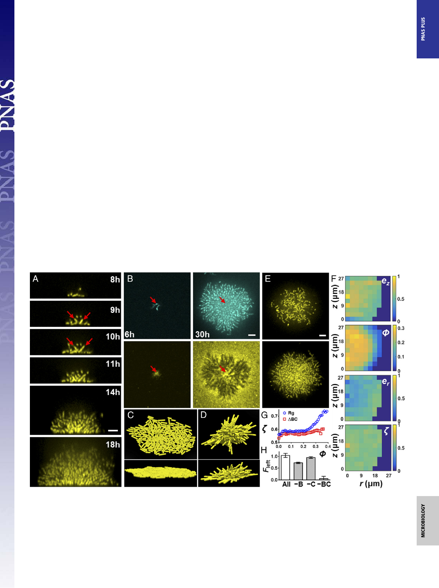

increase in cluster compactness coincides with a steady increase in
hezi. Thus, the increase in cell density at the center of the biofilm is
tightly coupled to cell reorientation events that vertically align the
cells. A faster expansion rate in the cluster height than in the radius
occurs immediately after this transition (Fig. 1G, Inset), showing
that biofilm development has changed from 2D growth to 3D ex-
pansion. Vcell finally plateaus upon entry into stationary phase.
The 2D-to-3D Transition Is Caused by Surface Adhesion. To deter-
mine the trigger of the 2D-to-3D biofilm transition and, ulti-
mately, to cell ordering, we inspected the period between phases
I and II of the Vcell curve from Fig. 1G. During this transition,
individual cells at the center of the biofilm reorient away from
their initial configuration parallel to the surface (Fig. 2A).
Daughter cells are born from the poles of these reoriented cells
and necessarily extend in the third dimension, triggering the
formation of the 3D dome. The reorientation event is puzzling,
given that V. cholerae cells are adhered to the substrate by the
matrix protein Bap1 (25, 26). To investigate this phenomenon,
we stained living biofilms made from cells carrying a Bap1-3×
FLAG fusion in situ with Cy3-congugated anti-FLAG antibody
(Fig. 2B and Movie S4). The fusion caused no changes in biofilm
morphology. Consistent with earlier work (17), the founder cells
secrete significant Bap1 that diffuses to cover the surrounding
surface. Surprisingly, in the mature biofilm, Bap1 remains sur-
face-bound, whereas the cells have been lifted up away from the
surface, suggesting that a mechanical force overcomes cell-Bap1
bonds to enable cells to reorient vertically.
To represent the biofilm growth process in silico and uncover
the forces underlying the cell reorientation events, we developed
an agent-based simulation of biofilm formation that incorporates
rod-shaped bacteria with and without cell-to-surface bonds (27,
28) (Fig. 2 C and D and Movie S5). We begin the simulation with
a founder cell oriented parallel to the surface. Descendent cells
lacking surface attachment spread out along the surface but re-
main in two dimensions. Cells at the periphery tend to orient
tangential to the cluster edge due to being pushed by cells inside
the cluster (29). However, when surface attachment is added
to the simulation, rim cells maintain their radial orientation
throughout growth, reproducing the experimental observation.
The central cells, by contrast, are forced to tilt into the third
dimension when their surface-adhesion bonds at one pole are
overpowered by the total mechanical forces exerted by sur-
rounding cells lying flat on the surface. Reoriented cells auto-
matically extend their subsequent descendants further into the
vertical dimension. The agent-based simulations reveal the dual
role of cell-to-substrate adhesion: It provides a biophysical mech-
anism for cells first to attach to the surface and second to reorient
and undergo 3D growth as cell density increases. The simulation
is not intended to reproduce the complete nematic ordering that
occurs in mature biofilms, because we have not yet implemented
other matrix components (RbmA and Vps).
We hypothesized that the same surface-associated compression
that reorients the cells during growth is responsible for the ne-
matic ordering observed in mature biofilms. To test this hypoth-
esis, we generated deletions of the genes encoding the proteins
Fig. 2. Cell reorientation and ordering require surface adhesion. (A) Side view of a growing biofilm cluster of V. cholerae at the indicated times. Red arrows
indicate the reoriented cells, as well as their daughter cells. (B) Growing V. cholerae cluster (Top) with Bap1 labeled with Cy3 antibody (Bottom) at 6 and 30 h.
Arrows indicate the position of the founder cell. (C and D) Top and side views of a simulated biofilm without (C) and with (D) cell-to-surface attachment. (E)
Representative biofilm cluster from Δbap1ΔrbmC cells at 18 h at the bottom layer (Top) and 5 μm above the surface (Bottom). (F) Plots of ez, er, ϕ, and ζ for
the image shown in E. (G) Local order parameter ζ(ϕ) versus ϕ for the Rg parent strain (blue circles) and Δbap1ΔrbmC (ΔBC, red squares). (H) Restoration of
cell-to-surface attachment in Δbap1ΔrbmC biofilms by cell-free conditioned medium lacking the indicated component(s). B denotes Bap1, and C denotes
RbmC. Surface attachment is quantified by the fraction of biomass remaining after being subjected to flow (Fleft), averaged over four biological replicates
(error bars correspond to SDs). (Scale bars: A, B, and E, 5 μm.)
Yan et al.
PNAS | Published online August 23, 2016 | E5339